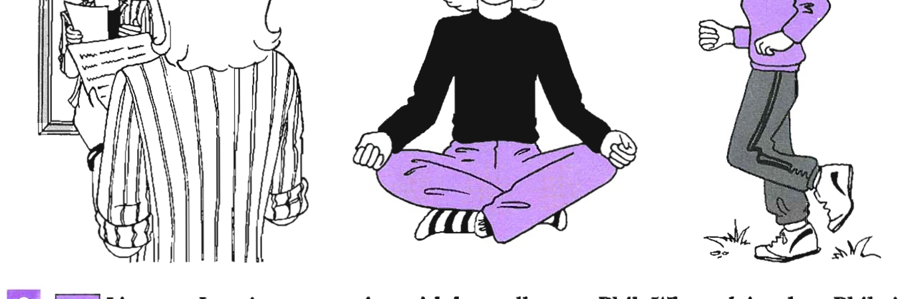
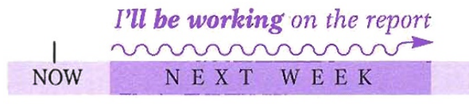
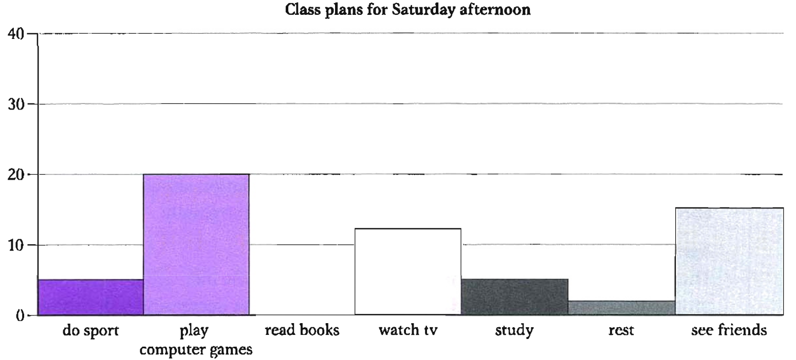

Pre-listening: Janet's conference talk
Janet is a university lecturer. She gets nervous when she gives talks at conferences.
Look at the pictures. Which do you think would help Janet feel more confident and relaxed?

Look at the pictures — discuss which would help Janet feel confident and relaxed
Listen and answer the question — Track 09
Track 09 — Janet and Phil's conversation
Context listening — conference talks
Listen to Janet's conversation with her colleague, Phil. What advice does Phil give her?
Listen again and complete the sentences — Track 09
Listen again and complete the sentences below. Write no more than three words for each answer.
Look at the sentences used in Exercise 3 and answer these questions
B1 — Present Simple
We use the present simple with a future meaning:
- To talk about timetables or schedules:
The conference only lasts three days.
The train to the airport leaves in 20 minutes. - After conjunctions such as when, as soon as, after, before, until, as long as:
I'll be feeling really nervous when I get to Rome. (notwhen I will get to Rome)
Can you do it before we have the departmental meeting? (notbefore we will have the meeting) - Note that other present tenses are also possible:
I won't be able to relax until I'm actually giving my talk.
B2 — Be about to
| Form | Example |
|---|---|
| + am/is/are about to + verb | I'm about to go to Rome. |
| − am/is/are not about to + verb | I'm not about to go to Rome. |
| ? Am/Is/Are … about to + verb? | Are you about to go to Rome? |
We use be about to to talk about something likely to happen in the immediate future:
- I'm about to go to Rome for a conference. (I will be leaving very soon)
- The negative form suggests the speaker has no intention of doing something:
I'm not about to cancel my trip. (= I have no intention of cancelling my trip)
B3 — Future Continuous
| Form | Example |
|---|---|
| + will be + verb + -ing | I'll be feeling nervous. |
| − will not (won't) be + verb + -ing | She won't be feeling nervous. |
| ? Will … be + verb + -ing? | Will you be feeling nervous? |

We use the future continuous:
- To describe or predict events or situations continuing at a particular point in the future, or over a period of time in the future:
I'll be working on the report all next week.
I'll be thinking of you in Rome.
By the year 2015 it is estimated that well over one billion people will be learning English. - To talk about events that are planned or already decided (similar to the present continuous for future arrangements):
I'll be seeing Sarah at lunch.
B4 — Future Perfect Simple
| Form | Example |
|---|---|
| + will have + past participle | I'll have done it by then. |
| − will not (won't) have + past participle | We won't have done it by then. |
| ? Will … have + past participle? | Will you have done it by then? |
We use the future perfect simple to talk about a future event that will finish before a specified time in the future, often with before, by + fixed time, or in + amount of time:
- By the end of the year I will have given the same talk at 6 conferences!
- I'll have finished it by next Friday.
- In a week's time I'll have written the report.
B5 — Future Perfect Continuous
| Form | Example |
|---|---|
| + will have been + verb + -ing | I'll have been studying here for three months. |
| − will not (won't) have been + verb + -ing | We won't have been studying here for long. |
| ? Will … have been + verb + -ing? | How long will you have been studying here? |
We use the future perfect continuous to show how long an activity or situation has been in progress before a specified time in the future. We usually mention the length of time:
- By the end of the month I'll have been working here for three years.
Grammar extra: The future in the past
We use was/were going to, was/were planning to, was/were about to + verb to talk about something planned which did not or will not happen:
I was going to leave this morning but they cancelled my flight.
We were about to leave when the phone rang.
Complete the sentences using the future continuous tense
The following chart shows the results of a class survey about planned activities for Saturday afternoon. Complete the sentences using the future continuous tense.

Now write what you will be doing at the following times. Answers will vary.
Future perfect — population projections
Read the following projections about the future population of Australia.
Population projections
The projected population will age progressively due to the increasing proportion of the elderly (aged 65 years or more) and the decreasing proportion of children (aged under 15 years). In brief, the number of persons aged under 15 is projected to be between 3.7 and 4.1 million in 2031; the population of working age (15–64 years) is projected to increase to between 14.4 and 15.0 million in 2031; and the number of persons aged 65 years or more is projected to increase to between 2.94 and 2.98 million in 2031. The projections also show significant increases in the number of persons aged 80 years or more.
Write the verbs in brackets in the future perfect tense. Then choose the correct ending for each sentence.
Underline the mistakes and write the corrections
In six of these sentences there is a verb in the wrong tense. Underline each mistake and write the correction.
Fill in the gaps with a future form from this unit
Fill in the gaps with a future form from this unit and the verbs in brackets.
Student 1: Well, that's difficult to say but I hope that I (2 travel) round the world. Before then I (3 hopefully/save up) enough money for the ticket. I plan to end up in Australia and when I (4 get) there I'll get a job and earn some money. So, in a year's time I (5 probably/travel) for a few months already. I hope that I (6 visit) quite a lot of different countries by then too.
Teacher: What do you plan to do when you graduate?
Student 2: Well, my plans have changed a bit. I (7 do) a journalism course, but I didn't get accepted. So I've sorted something else out and I (8 start) a hospitality course tomorrow, actually. It's for six months, so I (9 not/finish) in time to go travelling next spring, unfortunately. However, as soon as I (10 find out) if I've passed the course, I can apply for a job in a hotel in Australia.
Writing Task 2
The birth rate in most developed countries is predicted to begin to fall over the next 50 years. By 2030 it is estimated that over one third of the population in most developed countries will be aged 65 and over.
Write your essay here
Write at least 250 words. Answers will vary.
Complete the extract with the correct future tense
View the full model answer
However, I believe the biggest impact will be on the younger generation. In 2030 the younger generation will need to work much harder to support the large number of older people. If this trend continues then it is possible that our entire culture will change. For example, most marketing companies today try to target the younger generation with their products and advertisements. If the majority of the population is older then this will change and companies will begin to target the older generation instead.
So, what can be done now to prevent these problems? Firstly, I believe that governments of developed countries should find ways to encourage people to have larger families and increase the birth rate. Secondly, I believe that they should encourage migration from developing countries so that the problems of over-crowding can be solved.